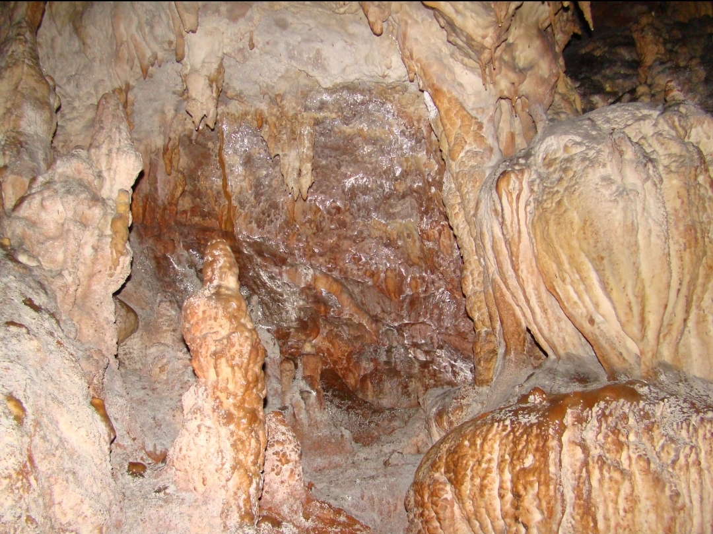

Abbisso del Vento

ITALIANO - Ipogeo carsico a pozzo verticale di notevole profondità (oltre 210 metri), senza attuale scorrimento idrico ma interessato da fenomeni di stillicidio. Sono presenti splendide forme di concrezionamento (stalattiti, stalagmiti, cannule ecc.).
ENGLISH - Karst hypogeum with vertical well of considerable depth (over 100 meters), without current water flow but affected by phenomena of dripping. There are splendid forms of concretion (stalactites, stalagmites, cannulae, etc.).